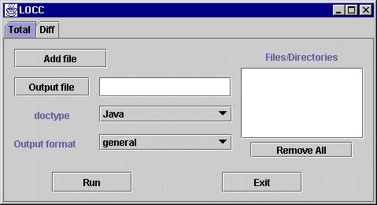
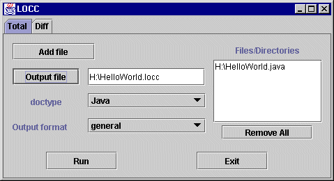
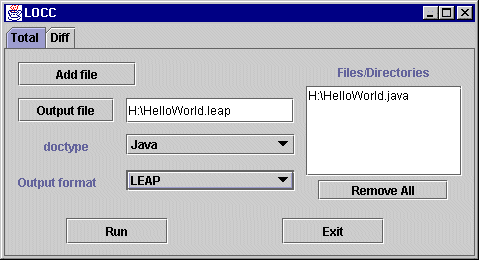
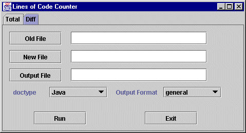
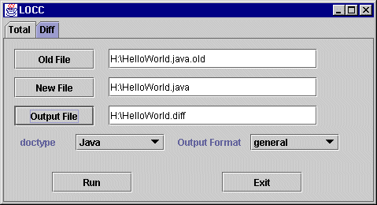

Last modified: Mon Aug 30 14:03:32 HST 1999
LOCC is a general mechanism for producing one or more measurements of the size of work products. LOCC has stood at various times for "Lines of Code Counter", "Line-Oriented Counter Compiler", and "Lots Of Content Counter". We solicit your input on other expansions of this acronym. LOCC can produce both the "total" size of a work product, as well as the "difference" in size between successive versions of the same work product.
LOCC currently supports size measurement of ASCII text and Java source code. LOCC is extensible by virtue of its reliance on JavaCC to generate a parser for the work product, along with standard interfaces to traverse parse trees for particular work product instances to produce size information. We intend to enhance LOCC to support size measurement of C++ in the near future, and support for other languages may follow.
LOCC can produce "hierarchical" size measurements. For example, in a Java program, one might measure size in terms of the number of packages, classes, methods, and lines of non-comment source code per method. These measures are hierarchical, in the sense that by keeping track of the membership of methods to classes, and classes to package, one can compute the lines of code per method, per class, and per package. Such hierarchies are ubiquitous in modern programming languages, but also occur in other work products as well. For example, one hierarchical size measurement of a technical report might be number of chapters, number of sections, number of subsections, number of paragraphs, number of lines per paragraph, and number of words per line.
There are many applications of size measurement, and the intended application greatly influences how size is defined and counted. LOCC is designed to facilitate size measurement by individuals of their own work products for the purpose of planning and estimation. For example, if a correlation between size and effort can be established on prior work products, then by estimating the size of a work product in the planning stage, an estimate of the amount of effort can be calculated through linear regression, along with a predication interval. (See "A Discipline for Software Engineering", Watts Humphrey, Addison-Wesley, 1995, for a detailed discussion of this approach to size estimation.) LOCC is also designed to serve as instrumentation for research into size measurement for the purposes of estimation and planning by individuals.
Hierarchical size measurement is quite useful in individual planning and estimation, since it is not clear a priori which among the number of lines, number of methods, number of classes, or even number of packages will correlate best with effort. By producing a hierarchical size measurement, LOCC allows the planner to investigate all of these size measures simultaneously and choose the one which appears best suited to the context.
LOCC's reliance on a grammar to parse the work product means that LOCC does not suffer from several design limitations of its predecessor system, JavaCount. Unlike JavaCount, which required programmers to format their source code in a specific manner, LOCC will successfully parse and produce size measures for source code regardless of its layout. However, it should be noted that in order for size measures to be used successfully for planning and estimation, individual programmers should take care to layout their code in a consistent manner across projects so that the size measures obtained are comparable.
The next sections document the installation, GUI interface, and command line interface to the system.

As the screen above illustrates, there are two tabbed panels from which to choose. The "Total" panel is used to generate size measures of one or more files. The "Diff" panel is used to generate an "incremental" size by comparing the total sizes of two files.
The window showing the LOCC Total GUI interface is displayed above. First, the user must select the files to be counted. Pushing the "Add File" button will pop up a file dialog which can be used to select files to count. If a mistake is made, the "Remove All" button will remove all currently selected files. There is no way at present to remove individual files.
Second, the user must select an output file. The "Output File" button can be used to bring up a file dialog, or the file name can be directly entered into the field.
IMPORTANT!
LOCC currently takes a somewhat clumsy approach to handling output files.
When running the Total counting tool, existing output files are clobbered,
i.e. they are truncated to zero length before output is written to them.
The Diff counting tool takes the opposite approach: output to the file is
appended onto the end of the file. This is admittedly counter intuitive,
but since currently one can only enter a single new/old file pair in the
Diff counting tool, having this tool work in append mode makes sense. The
Total counting tool can process many files at once, and so it makes sense to
begin with a fresh output file.
As a matter of pratice, users should generally first run the Total tool, thereby creating a fresh output file, and then run the Diff tool, appending onto the end of the same output file used in the Total tool. Future versions of LOCC will eliminate this confusion by allowing the user to specify output modes for both Total and Diff counting.
The doctype and output format must be specified if the default values are incorrect. The doctypes currently supported are "text" and "Java". The output format can be either "general" or "LEAP".
Third, when all the files have been entered, and doctype and output format successfully specified, the user presses the "Run" button to start the system. The output is placed in the output file. There is no way at present to view the output from within the GUI.
// A simple file containing the Hello World program.
import java.io.*;
class HelloWorld {
public static void main (String [] args) {
System.out.println("Hello World!");
}
}
She decides to obtain some "general" information concerning the size of this program. To do this, she brings up LOCC and specifies the input file as "HelloWorld.java" and the output file as "HelloWorld.locc":

After pressing "Run", LOCC produces the following and writes it to HelloWorld.locc:
Java Source: HelloWorld.java (6) Number of Classes: 1 Number of Interfaces: 0 Number of Methods: 1 Package: Class: HelloWorld (5) 1 Method(s): Method: main (3)
This file indicates that the file HelloWorld contains 6 lines, one class, and one method. The class HelloWorld contains 5 lines. The method main() with the class HelloWorld contains 3 lines.
Alternatively, the user might desire size information on her "HelloWorld" program in a format appropriate for input into the Leap toolkit. To do this, she selects "Leap" as the doctype, and changes the file name as illustrated next:

After pressing "Run", LOCC produces the following and writes it to HelloWorld.leap:
As you can see, Leap files use a modified format of HTML to represent size data, and represent the same size information in a slightly different manner than the "general" format shown previously.<table border> <tr> <td>SDT Plain 1.0.0 <tr> <th>Name<th>DocType<th>1st<th>2nd<th>3rd<th>4th<th>5th<th>6th <tr> <td type=Name>JavaSize <td type=DocType>Java Source <td type=1st>Lines <td type=2nd>Method <td type=3rd>Class <td type=4th>Package <td type=5th> <td type=6th> </table> <table border> <tr> <td>SIZ Plain 1.0.0 <tr> <th>DocID<th>CreateDate<th>SizeType<th>Path<th>File<th>1st<th>2nd<th>3rd<th>4th<th>5th<th>6th <tr> <td type=DocID> <td type=CreateDate>12:24 02/18/1999 <td type=SizeType>JavaSize <td type=Path>H:\ <td type=File>HelloWorld.java <td type=1st>3 <td type=2nd>main <td type=3rd>HelloWorld <td type=4th> <td type=5th> <td type=6th> <tr> <td type=DocID> <td type=CreateDate>12:24 02/18/1999 <td type=SizeType>JavaSize <td type=Path>H:\ <td type=File>HelloWorld.java <td type=1st>2 <td type=2nd> <td type=3rd>HelloWorld <td type=4th> <td type=5th> <td type=6th> <tr> <td type=DocID> <td type=CreateDate>12:24 02/18/1999 <td type=SizeType>JavaSize <td type=Path>H:\ <td type=File>HelloWorld.java <td type=1st>1 <td type=2nd> <td type=3rd> <td type=4th> <td type=5th> <td type=6th> </table>
First, the HelloWorld.leap file begins with a Size Definition Table (SDT), which specifies the kind of hierarchical size measure that is used for the following size data. This hierarchical size measure indicates that information about size at the grain sizes of lines, methods, classes, and packages.
The second table contains the actual size data, and has three entries. The first entry specifies that the main() method in the HelloWorld class consists of three lines. The second entry specifies that the HelloWorld class contains two lines not present in any method. The third entry specifies that the HelloWorld.java file contains 1 line not contained in any method, class, or package.
The Leap size data representation language is somewhat complicated, and the preceding discussion gives you only a taste of what's involved. For more details on Leap size representations and the toolkit that manipulates it, you should consult its home page at http://csdl.ics.hawaii.edu/Tools/LEAP/LEAP.html.

The "Old File" and "New File" buttons bring up dialogs to select the old and new files, or the names can be directly entered into the fields. The output file must also be specified. The doctype and output format are selected as described above.
// An updated simple file containing the Hello World program.
import java.io.*;
class HelloWorld {
public static void main (String [] args) {
System.out.println("Bonjour Le Monde!");
System.out.println("Comment ca va?");
}
}
She would now like to determine, not the total size of this program, but rather a measure of the size of the changes to the HelloWorld program required to produce HelloWorld2. To do this, she brings up the Diff panel and specifies the two files she wishes to compare and the output file where she would like the results placed:

Pressing the Run button produces the following file:
Size Difference info for HelloWorld.java 2 lines added in method main 0 lines added in class HelloWorld 0 lines added in packageNote that "added" can also be interpreted as "added or modified". Alternatively, the user could request that the differences between these two files be produced in LEAP format. The Leap output for this difference again indicates that exactly two lines were added.
<table border> <tr> <td>SDT Plain 1.0.0 <tr> <th>Name<th>DocType<th>1st<th>2nd<th>3rd<th>4th<th>5th<th>6th <tr> <td type=Name>JavaSize <td type=DocType>Java Source <td type=1st>Lines <td type=2nd>Method <td type=3rd>Class <td type=4th>Package <td type=5th> <td type=6th> </table> <table border> <tr> <td>SIZ Plain 1.0.0 <tr> <th>DocID<th>CreateDate<th>SizeType<th>Path<th>File<th>1st<th>2nd<th>3rd<th>4th<th>5th<th>6th <tr> <td type=DocID> <td type=CreateDate>12:38 02/18/1999 <td type=SizeType>JavaSize <td type=Path>H:\ <td type=File>HelloWorld.java <td type=1st>2 <td type=2nd>main <td type=3rd>HelloWorld <td type=4th> <td type=5th> <td type=6th> <tr> <td type=DocID> <td type=CreateDate>12:38 02/18/1999 <td type=SizeType>JavaSize <td type=Path>H:\ <td type=File>HelloWorld.java <td type=1st>0 <td type=2nd> <td type=3rd>HelloWorld <td type=4th> <td type=5th> <td type=6th> <tr> <td type=DocID> <td type=CreateDate>12:38 02/18/1999 <td type=SizeType>JavaSize <td type=Path>H:\ <td type=File>HelloWorld.java <td type=1st>0 <td type=2nd> <td type=3rd> <td type=4th> <td type=5th> <td type=6th> </table>
// An even more updated simple file containing the Hello World program.
// Saved to the file HelloWorld2
import java.io.*;
class HelloWorld2 {
public static void main (String [] args) {
System.out.println("Bonjour Le Monde!");
System.out.println("Est-ce que ca va bien?");
}
}
We might now want to do a diff between our most recent
HelloWorld.java and this new HelloWorld2.java. Note that
we've only changed two lines: the line containing the
class name and the second println statement. However,
LOCC does not appear to agree with us:
Size Difference info for HelloWorld2.java 6 lines added in class HelloWorld2 0 lines added in packageWhy does LOCC think that HelloWorld2 added six lines when we know that we only modified 2? The reason is because LOCC diffs Java code by comparing the code on a class by class and method by method basis. In other words, LOCC tries to diff HelloWorld.java with HelloWorld2.java by finding the class HelloWorld in the first file, then looking for that same class in the second file. In the first example we considered previously, LOCC is able to find the same class (HelloWorld) in both files (HelloWorld.java.old and HelloWorld.java). However, in this second example, LOCC can't find the class HelloWorld in the new file because it was renamed to HelloWorld2. So, LOCC reports that an entirely new class containing six lines is added to the new file HelloWorld2.
Counting and differencing size on a unit by unit basis is highly advantageous in many circumstances, but its achilles heel is the situation in which the user modifies the actual class names and/or method names in a file. In situations like this, LOCC will basically provide an "inflated" value for the amount of code changed, because by changing the name of the method or class, you guarantee that the entire method or class will be counted as new size regardless of how much you changed inside.
java csdl.java.locc.sys.LOCTotal [ arguments ]
The command line arguments supported are
the sizetype argument informs the system what sort of files are being processed and how to go about counting the files. The currently supported sizetypes are javaline and textline, which do line based counts of Java source and ASCII text, respectively. There is no default, and this argument must be specified.
the infiles argument specifies a list of files to process. This argument may appear more than once on the command line.
the indir argument is used to process all the files in directory DIR with the extension EXT. The extenstion is a literal string, not a wildcard pattern. So to match java source files, use the extenstion ".java". This argument may appear more than once on the command line, and may appear in conjunction with the infiles argument.
the outdir argument instructs the system to place output in the specified directory. The default is the current working directory.
the outfile argument specifies the name of the file in which to place output. If this argument is not specified, output will be directed to distinct files, one for each input file. The names of these files will be the name of the input file with ".siz" appended. This argument is orthoganal to the outdir argument.
the outformat argument specifies the format used in producing the output. Each sizetype supports some number of output formats. The currently supported formats are "general", which produces human readable summaries, and "leap" which produces HTML tables, suitable for loading into LEAP tools. The default is "general".
print a short help message.
java csdl.java.locc.sys.LOCDiff [ arguments ]
The arguments supported are
the difftype argument informs the system what sort of files are being processed and how to go about counting the files. The currently supported difftypes are javaline and textline, which do line based diffs of Java source and ASCII text, respectively. There is no default, and this argument must be specified.
the name of the "new" file.
the name of the "old" file.
the name of the file in which to place output.
the outformat argument specifies the format used in producing the output. Each sizetype supports some number of output formats. The currently supported formats are "general", which produces human readable summaries, and "leap" which produces HTML tables, suitable for loading into LEAP tools. The default is "general".
print a short help message.